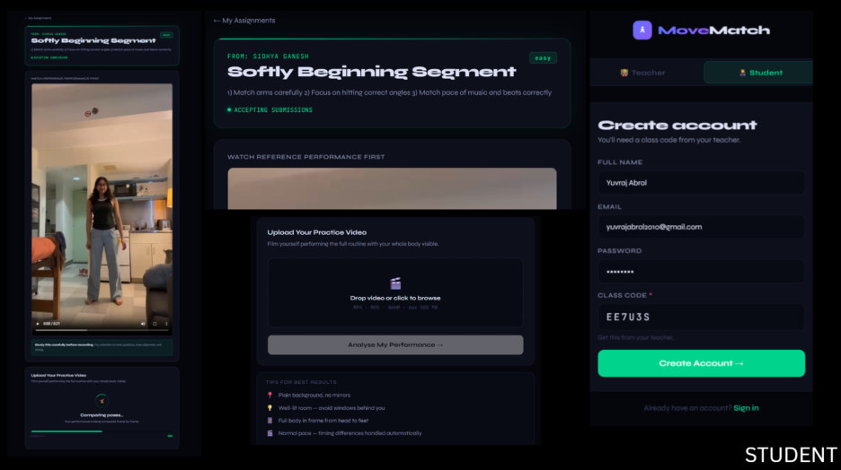
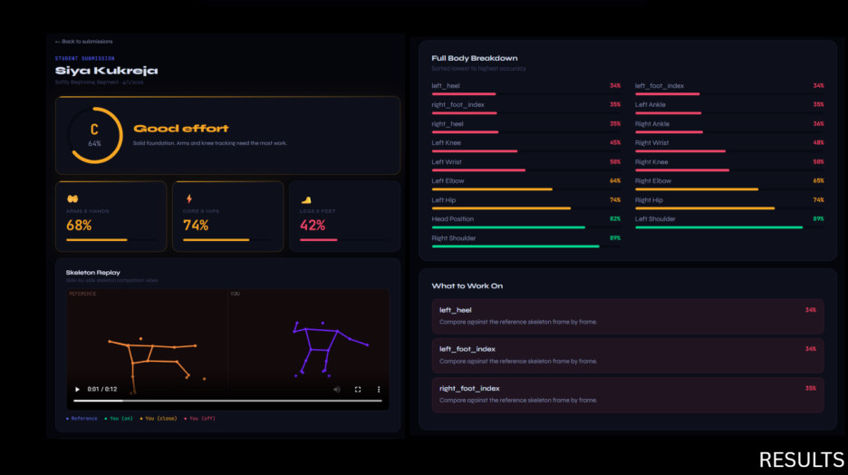
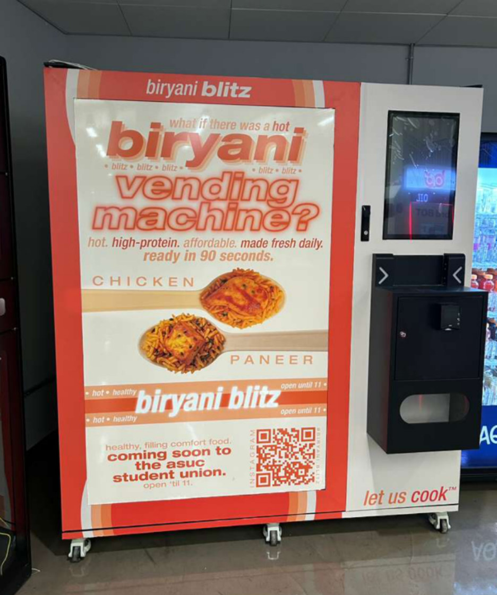
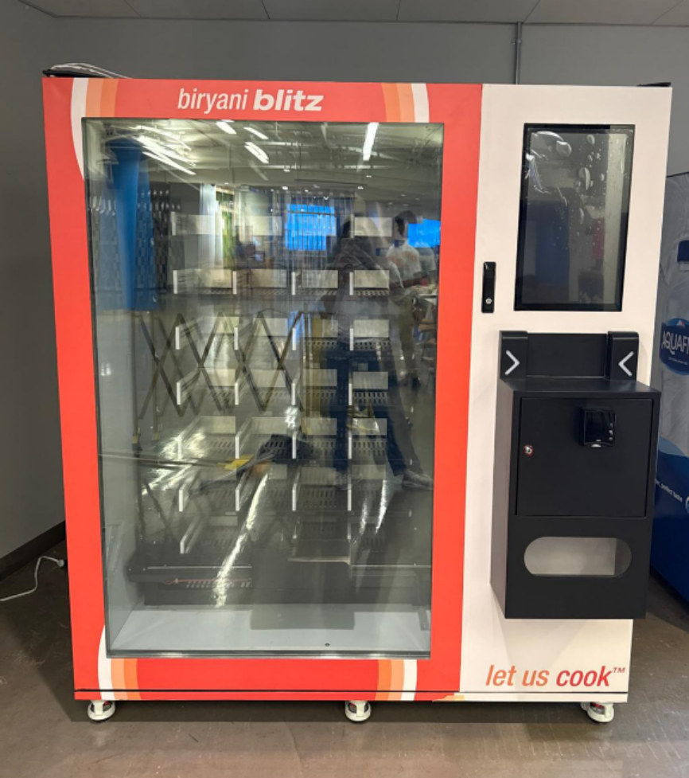
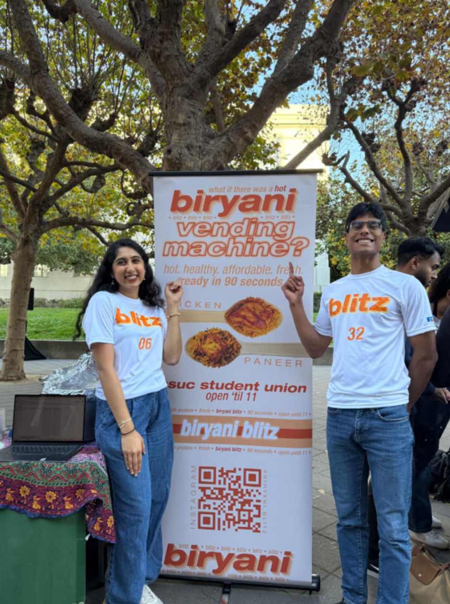

Wharton & Penn Engineering · BS Business Analytics · MS CS (AI/ML)
My first product was inspired by watching my dance students struggle to grow outside of class hours - that frustration became MoveMatch: 120 students, 6 academies, 82% more practice in month one. Since then, my experience as a hungry college student searching for something good to eat past 9pm became an autonomous food vending machine hitting daily sellouts at UC Berkeley. Most recently, my passion for product took me to Pattern, where I spent a summer uncovering $6.9M in silent losses through data-driven investigation and shipping several warehouse tech tools from scratch. Here's everything I've shipped - the research behind it, the tradeoffs I made, and what I'd change.
Case Studies
Deep dives into how I think - problem framing, user research, prioritization, tradeoffs, and results.
Product Teardowns
Structural analysis of products I admire and critique - with specific feature proposals.
Engineering
I build to understand. These projects help me earn trust with engineers and design systems that are actually shippable.
Contact
I'm actively recruiting for APM / PM roles. Reach out - I respond fast.
Built end-to-end in 3 months. Serving 120 students across 6 dance academies. 82% increase in practice frequency in month one, and 40% increase in movement scores within 4 months of usage.
Dance students lack two things that every other learner takes for granted: motivation to practice independently, and expert feedback when no teacher is present.
Good teaching in the classroom doesn't replace homework. In every other discipline - math, music, language - students reinforce skills between sessions. Dance has no equivalent. Students leave class, practice blind, and often ingrain the same mistakes the teacher corrected that morning. Reinforcement is where growth actually happens, and dance has had no infrastructure for it.
As a 7-year Bollywood dance academy owner, I lived this problem on both sides. Teachers spending 40% of every class re-correcting habits formed between sessions. Students who couldn't tell if their solo practice was helping or hurting them.
Weekly practice sessions per student - not AI score.
The instinct was to make average AI score the north star - it's concrete and directly tied to the product's output. But scores can be gamed. A student who uploads the same video repeatedly will score well without growing as a dancer.
Practice frequency can't be faked the same way. A student who shows up four times a week is building muscle memory regardless of what their score says. And if they're practising that often, scores will improve naturally. Not one teacher in interviews said "I want my students to score higher." Every single one said "I want my students to practice more between sessions."
Beginner and younger students get a score boost applied to their raw AI output. A 6-year-old going from 20% to 40% over months shouldn't see numbers that look like failure - that destroys motivation before the habit forms.
One consistent scoring model across all age groups and levels. Simpler, more honest, easier to explain. But a technically accurate 22% demoralises a beginner who is genuinely improving.
Positive reinforcement is not dishonesty - it's product design. For advanced dancers the booster shrinks as they approach technical mastery. The metric that matters is whether students keep practising, and they did.
Validate the upload behaviour before building the upload feature. My core hypothesis was that students would consistently record themselves and submit practice videos unprompted. Before spending months on infrastructure, I should have run a two-week test: ask students to WhatsApp me their practice videos twice a week and score them manually in a spreadsheet.
If that behaviour stuck, the product was worth building. If it didn't, the whole premise needed rethinking. I would have found my answer in two weeks instead of three months.


Autonomous hot-food vending platform delivering restaurant-quality Indian meals in 60 seconds - designed around the constraints of campus dining, food safety, and hardware reliability. $150K projected ARR per machine · 41.7% gross margin · live at UC Berkeley.
Campus dining forces students into a constant tradeoff: every option solves one or two of the five things they actually need - hot, healthy, affordable, quick, and conveniently located - while failing the rest. Dining halls close early. Delivery is slow and expensive. Fast-casual means a 20-minute detour. Existing vending offers speed but nothing worth eating. No single option collapses all five constraints at once.
As a Wharton student building this with a co-founder at UNC over late-night calls, we were the users we were trying to serve. We experienced the 10pm dining hall shutdown, the $22 Uber Eats receipt, and the protein bar fallback firsthand.
This metric forces the product to be simultaneously good on demand, pricing power, throughput, and uptime - all at once. The alternative "bowls dispensed per day" is gameable: a machine selling cheap bowls with thin margins and high spoilage can look healthy on throughput while the business bleeds.
Monthly revenue per unit is the single number that captures whether we've actually solved the customer's problem at a price they'll keep paying.
My co-founder pushed for $10 (penetration), I pushed for $12 (skimming). Rather than escalate, I proposed turning each position into a testable hypothesis - and we agreed upfront to commit to whatever the data showed. ~100 A/B-style tests and 180+ structured interviews later, higher-quality packaging lifted WTP by ~$1/bowl at only $0.10 extra cost. We aligned on $11.24 ASP.
The faster path was for one of us to concede. But a founder-driven price lock-in at launch would have been hard to revisit - it becomes part of the contract with Berkeley, the marketing materials, and the financial model. Getting it wrong mid-pilot kills trust.
In high-stakes disagreements, the fastest resolution isn't winning the argument - it's replacing opinion with a shared process both sides trust.
We assumed 56 bowls per day was a reasonable throughput target without stress-testing what that actually required operationally - how many restocks, at what cadence, during which dayparts. At launch the machine hit 112 meals/day, which exposed that our restocking cadence and supply chain weren't designed for that load.
I'd have instrumented throughput expectations much earlier - running a fake-door test to measure actual conversion by location and time of day before finalizing the ops model. That would have let us build the supply chain to match real demand curves, not projected ones.



Mapped $6.9M in annual reimbursement exposure across a 1.6M-shipment Snowflake dataset, identified four distinct root causes in the documentation pipeline, and drove three engineering fixes from zero to shipped - including writing and deploying a regex validation ticket to production.
When Amazon loses inventory Pattern ships, Pattern can file a reimbursement claim - but only with an Amazon Reference Number (ARN) proving the shipment left the warehouse. Without it, Amazon denies outright.
The ARN flows through a chain of systems: warehouse departure - carrier pickup - ShipmentCzar (Pattern's internal logistics layer) - Amazon Freight API - reimbursement filing. I owned end-to-end investigation of where that chain was breaking and why.
Pattern's CS team was fielding 1,009 documentation requests a year. The reimbursement team could only file 40% of eligible cases. Nobody had a clear picture of why. I found four separate root causes nobody had mapped before.
I traced 808,000 FBA shipments in Snowflake and found only 54.4% ever reached an outbound shipment record. Before surfacing that number to stakeholders, I corrected the ARN null rate from 34% to 11% by stripping cancelled shipments - a 4x inflation that would have sent the team solving the wrong problem entirely.
I then split the remaining null-ARN population into two mechanically distinct buckets:
Treating these as one problem would have meant shipping the re-poll fix, celebrating, and leaving 84.8% of the exposure completely untouched. I pushed for both fixes in parallel.
North star: % of departed FBA shipments with a valid ARN. Baseline: 11% missing. Target: near 0%.
I reoriented away from "reimbursements filed" because it only reflects Pattern's ~15 active reimbursement sellers and stays flat even when the underlying documentation infrastructure improves. ARN completeness covers all sellers, can't be gamed, and tracks exactly what engineering controls - not Amazon's approval rate.
When the re-poll proof of concept worked, it would have been easy to call that the fix and move on. I didn't, because the bucket analysis showed 84.8% of null-ARN shipments had never been on a truck at all - re-polling can't touch them. I pushed to scope and write both engineering tickets in parallel.
Re-poll was working, was easy to ship, and would have shown measurable improvement - while leaving 84.8% of the problem untouched. Sequencing the fixes would have created a false sense of progress and left most of the $6.9M exposure intact.
I spent two weeks on data analysis before discovering that several engineers had already run versions of the same queries. My first move should have been a 30-minute standup with the data and engineering teams to map what had already been tried. Systems like this always have a prior spike ticket or a previous analyst - find them first.
A mini-PRD on the Fitbit to Google Health transition - and why cutting the social layer at the exact moment the AI coach bet is unproven puts retention at risk.
In May 2026, Google rebranded the Fitbit app into Google Health, rolling out an AI driven "Ask Coach" feature while quietly retiring the social and gamification layer that a lot of longtime users actually relied on. Badges, groups, and leaderboards were cut outright, and anyone who wanted to hold onto their history had a hard deadline to export it before the data was gone for good.
This was a real strategic bet, not just a UI refresh: that AI driven coaching could take over as the main reason people stick around, replacing what used to be a fairly reliable peer driven motivation loop. That bet hasn't really been proven out yet.
Users who stayed engaged with Fitbit because of its social layer, not just because of the tracking itself, lost the exact mechanism that kept them coming back every day. An AI coach can tell you what to do, but it can't really replicate the specific psychological driver that made competitive, peer visible progress motivating in the first place - accountability to other people, not just to an algorithm.
Strava is probably the clearest proof that this driver holds up and can be monetized entirely on its own. Its growth engine runs on kudos, segments, and being able to see what your friends are doing, and it never needed an AI layer to do that motivational work. Google Health cut that layer at the exact moment it was leaning on an unproven substitute to carry the same weight.
I actually ran into this exact dynamic building MoveMatch, my own AI dance coaching app. I built out a pretty robust coaching engine that gave detailed feedback and synthesized performance across sessions, and the feedback itself was genuinely good. But students still weren't motivated to keep coming back, and once I dug into why, it came down to their dance journey feeling isolated. What actually brought them back was adding leaderboards and a feed where classmates could see each other's improvement scores and practice sessions over time. Once that community layer existed, engagement with the AI coach itself went up too, since now there was a reason to check in daily beyond just the feedback. In my experience, the AI coaching made the experience better once people were already showing up, but it was the community angle that got them to show up in the first place.
If this goes unaddressed, the risk is that users who came to the app for community driven motivation churn out during this transition, before the AI coach even gets the chance to prove it can hold retention on its own.
This is really about users across platforms who were active in Fitbit's social features before the transition - group members, leaderboard participants, badge collectors - regardless of whether they're on Android, iOS, or a Pixel or Fitbit device. The common thread isn't the platform they're on, it's what actually kept them motivated in the first place.
Give users accountability beyond the algorithm. This is the actual gap left by cutting the social layer. An AI coach can't replicate accountability to another person. Solution: Friend streaks - visible, shared streaks between connected friends.
Keep the mechanism low effort to maintain daily. If the social layer takes real work to keep up with, it becomes another chore instead of a motivator. Solution: Kudos and reactions - a one-tap way to acknowledge a friend's logged activity, basically Strava's core mechanic.
Avoid demotivating casual users through comparison. Ranked competition works for a narrow, highly competitive slice of users, but can push casual users away when they feel outmatched - likely part of why Google felt comfortable cutting it in the first place. Solution: deliberately exclude leaderboards and rankings from this version. Streaks and kudos capture the accountability benefit without the comparison downside.
Complement the AI coach investment instead of competing with it. Google isn't wrong that AI coaching adds value - my own experience with MoveMatch showed the coaching genuinely improved things once people were engaged. The gap is what gets people to show up in the first place. Solution: position the social layer as sitting alongside the coach, not replacing it. Coach recommendations and social activity live in the same feed rather than separate tabs.
Feel like a deliberate, opt-in addition rather than a rollback. Google explicitly moved away from Fitbit's old social model. Bringing it back needs to read as intentional, not as an admission the redesign was wrong. Solution: opt-in at onboarding or in settings, off by default for users who don't want it.
Low engineering lift, high behavioral leverage. Streaks and kudos are proven, well understood patterns from Strava, Duolingo, and Snapchat, not some brand new mechanic that needs its own validation.
Complements the AI coach investment instead of competing with it. This isn't asking Google to walk back its AI bet, it's closing the gap while that bet has time to mature.
Timing works in Google's favor right now. The transition is recent enough that churned or disengaged users probably haven't fully migrated to competitors like Strava, Whoop, or Apple Fitness+, so there's still a retention window open.
D30 retention among users who were previously active in social features, comparing pre and post launch.
Weekly active logging rate (workouts, steps, sleep entries) for that same cohort.
Both of these are chosen because they measure actual behavior change, not just feature adoption. The goal isn't whether people tapped kudos - it's whether losing the social layer stopped being a reason for people to leave.
There's a real question of whether reintroducing any social layer risks cannibalizing engagement with the AI coach, if users just default back to old peer driven habits instead of leaning on the coach. It's worth instrumenting both engagement streams separately to see if they end up being additive or if one comes at the expense of the other.
Privacy and consent design matter more this time around than they used to. Google is explicitly trying to move past Fitbit's old social model, so this needs to feel like a deliberate, opt-in layer that users choose into, not a rollback that reads as Google admitting it got the redesign wrong.
Why Perplexity's biggest strength has a fundamental architecture mismatch - and a concrete feature proposal to fix it.
The follow-up surface is genuinely better than anything search has offered before. Suggested next questions reduce blank-page anxiety, context carries forward between turns, and the product understands that discovery is nonlinear. For a single-thread, single-topic session, it feels like having a research assistant in the room - and that's a genuinely hard thing to get right.
Perplexity is designed like a conversation but used like a research workflow, and those are fundamentally different things. Conversation is sequential and fluid. Research is branching, hierarchical, and revisitable. Perplexity's follow-up flow is built for the first model but users increasingly need the second.
The result: the product is excellent at helping you ask the next question but poor at helping you navigate back to the question you asked three turns ago. This isn't a minor UX complaint - it's a product architecture mismatch between what Perplexity promises (cumulative research) and what it actually delivers: a long, flat, unscannable stream.
1. No branching. Real research forks constantly. Today all of that lives in one linear scroll, with no way to label a branch "competitive landscape" vs "regulatory issues," no way to fork from a specific answer. Asking the user to hold the entire structure of their research in their own head defeats the purpose of having a research tool in the first place.
2. Follow-up suggestions are generic. If I've spent three turns on Indian food startup pricing, suggesting "tell me more about the market" is just noise. The product already knows what I've been researching - it should be suggesting the next meaningful research move, not the next plausible sentence.
3. Long threads become unusable. After 8–10 exchanges a thread is effectively unsearchable, with no summary, no milestone markers, and no way to jump to a specific earlier answer without scrolling past everything else.
4. No intent differentiation. "Tell me more," "compare that with X," "is that still true," and "summarize what we know" are all meaningfully different research moves. Treating them identically as the next message in a chat is a missed opportunity.
A lightweight branching layer that makes research sessions navigable and cumulative without adding complexity for casual users. When a user wants to explore a new angle mid-thread, they can fork from any answer into a named branch - "regulatory issues," "competitive landscape," "unit economics" - with branches appearing as labeled tabs or a visual sidebar tree.
Crucially, none of this would be visible until a thread reaches a threshold of complexity (5+ turns) - for casual one-off queries it stays completely invisible, because the product should never feel like a research tool when you're just asking what the weather is.
The main risk is complexity creep - branching UI can become a real burden if it's always visible. The solution I'd advocate for is progressive disclosure: branches only appear when the thread is long enough to need them. The second risk is that this nudges Perplexity toward Notion or Roam. The frame I'd use: this isn't a note-taking feature, it's a navigation feature. You're not asking users to organize their research - you're just helping them move through it without getting lost.
North star: follow-up depth per session - the average number of meaningful follow-ups before a user abandons a thread - because if Research Branches works, users should go deeper precisely because they're no longer getting lost. Leading indicators: branch creation rate among power users in 5+ turn sessions, drop in repeat query rate. Guardrail: onboarding completion rate for new users must not decline.